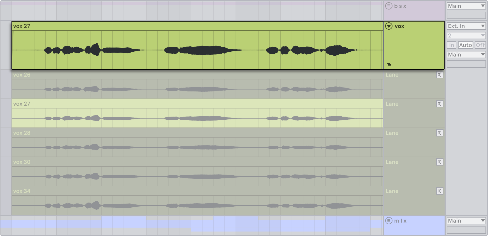
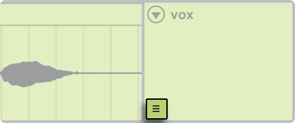

21. Comping
Comping makes it possible to pick the best moments of each recorded performance and combine them into a composite track (also known as a “comp”). Live can create take lanes in a track as you record material, which you can use to piece your favorite parts together. You can also store alternative versions of a clip arrangement on multiple take lanes, or drag samples from your library onto take lanes and use comping as a creative sample-chopping tool.
21.1 Take Lanes
Every audio or MIDI track in the Arrangement View can consist of multiple parallel lanes. The first lane of a track is the main lane, which is audible by default. A track can also have any number of take lanes, which are only audible when Audition Mode is enabled.


Take lanes are automatically created when recording new clips in the Arrangement and can also be inserted manually.
You can toggle the visibility of take lanes by choosing the Show Take Lanes command from a track header’s context menu, or by using the Show/Hide Take Lanes toggle in a track’s main lane.

The shortcut for showing or hiding take lanes is CtrlAltU (Win) / CmdOptionU (Mac).
You can use the left arrow key to navigate from a take lane to the main lane. This also folds all take lanes.
Note that take lanes are not shown when Automation Mode is enabled. You can still access the Show Take Lanes command and insert take lanes while in Automation Mode, but either action exits the mode to show all take lanes.
21.2 Inserting and Managing Take Lanes
You can manually insert a take lane into one or multiple selected tracks by choosing the Insert Take Lane command from the Create menu. The same command can be used from a track or take lane header’s context menu or via the shortcut ShiftAltT (Win) / ShiftOptionT (Mac). Inserting a take lane also unfolds any existing lanes if they are not already visible.
Note that you can also create take lanes and add clips to existing ones via the Live API with Max for Live.
Take lanes can be duplicated with the CtrlD (Win) / CmdD (Mac) shortcut, or via the Duplicate command in a take lane header’s context menu.
You can delete take lanes with the Backspace or Delete key, or via the Delete command in the Edit menu.
To remove all take lanes from a track, use the Delete All Take Lanes command in a track or take lane header’s context menu. The Delete All Unused Take Lanes command removes any take lanes that do not contain recorded material within a comp on the track’s main lane.
You can resize take lanes vertically by pressing Alt+ (Win) / Option+ (Mac) or Alt- (Win) / Option- (Mac), or by holding Alt (Win) / Option (Mac) and using the mouse wheel. These shortcuts resize all selected take lanes simultaneously.
The resize handles that appear when hovering over the edge of a take lane can also be used to adjust the height of one or multiple selected lanes.
You can reorder take lanes within their track by dragging and dropping them, or by holding the Ctrl (Win) / Cmd (Mac) modifier and pressing the up or down arrow key.
To rename take lanes, use the Rename command in the Edit menu or a take lane header’s context menu. The keyboard shortcut is CtrlR (Win) / CmdR (Mac). Multiple take lanes can be renamed simultaneously. Use the Tab and ShiftTab shortcuts to move between lanes and tracks while renaming them.
21.3 Recording Takes
While recording new clips in the Arrangement View, take lanes are automatically added to armed audio and MIDI tracks, and clips are created within those take lanes.
Recording over existing clips, either by recording individual passes or by recording in a loop, adds a new take lane for each pass. Existing take lanes are automatically reused when no other clip exists after the punch-in point.
The last recorded clip in a track is always copied to that track’s main lane so that it becomes immediately audible when playing back the Set.
Note that recorded clips inherit their track’s color by default. You can configure Live to automatically assign a different color to each take by setting the Clip Color toggle to Random in the Theme & Colors Settings.
21.4 Inserting Samples
You can drag samples and MIDI files to take lanes from the browser or File Explorer/Finder. When multiple samples are selected, hold the Ctrl (Win) / Cmd (Mac) modifier key while dragging to insert each sample into sequential tracks.
21.5 Auditioning Take Lanes
You can audition a take lane by clicking the Audition Take Lane button (displayed as a speaker icon) in that take lane’s header, or using the T keyboard shortcut.

Note that while you can audition take lanes from different tracks at the same time, you can only audition one take lane per track. If a time selection or lane header selection includes multiple take lanes from different tracks, the last selected lane for each track is auditioned.
21.6 Creating a Comp
Selected material in take lanes can be copied to the main lane by pressing the Enter key or via a take lane’s Copy Selection to Main Lane context menu command.
It is possible to replace clips in a track’s main lane with the next or previous take lane clips by selecting clip headers or making a time selection within the main lane or a take lane and then holding Ctrl (Win) / Cmd (Mac) while pressing the up or down arrow key. If the time selection is on a take lane, the selection also moves to the next or previous take. Note that empty take lanes are ignored.

In Draw Mode, selected take lane material can be copied to a track’s main lane in one single gesture by clicking, dragging, and then releasing the mouse. It is also possible to replace the clips in a time selection on the main lane by clicking on a take lane to insert the corresponding portion of that take into the selection.
The clips added to a track’s main lane are independent copies of the corresponding take lane clips. This means that you can freely edit clips in the main lane without modifying the original take lane clips and vice versa. Clips in take lanes can be edited the same way as other clips in the Arrangement View: they can be moved, copied/pasted, dragged/dropped, consolidated, cropped, or duplicated. Take lane clips can also be moved to Session View clip slots by either copying and pasting or dragging and dropping.
You can prevent clicks between clips by enabling the Create Fades on Clip Edges option in the Record, Warp & Launch Settings. When enabled, four-millisecond crossfades are automatically created for adjacent clips. You can also manually create these crossfades by selecting multiple clips and pressing CtrlAltF (Win) / CmdOptionF (Mac).
21.7 Source Highlights
For every comp in a main lane, the source material in the corresponding take lanes is highlighted in the track’s color. All unused take lane material is displayed in a desaturated shade of the track’s color. This makes it easier to identify which recorded material is part of the comp. Note that source highlights will only be shown when the clips have matching positions and properties.

Source highlights on take lanes can be resized to adjust the split point between two adjacent parts of a comp by dragging the edge of the highlight.